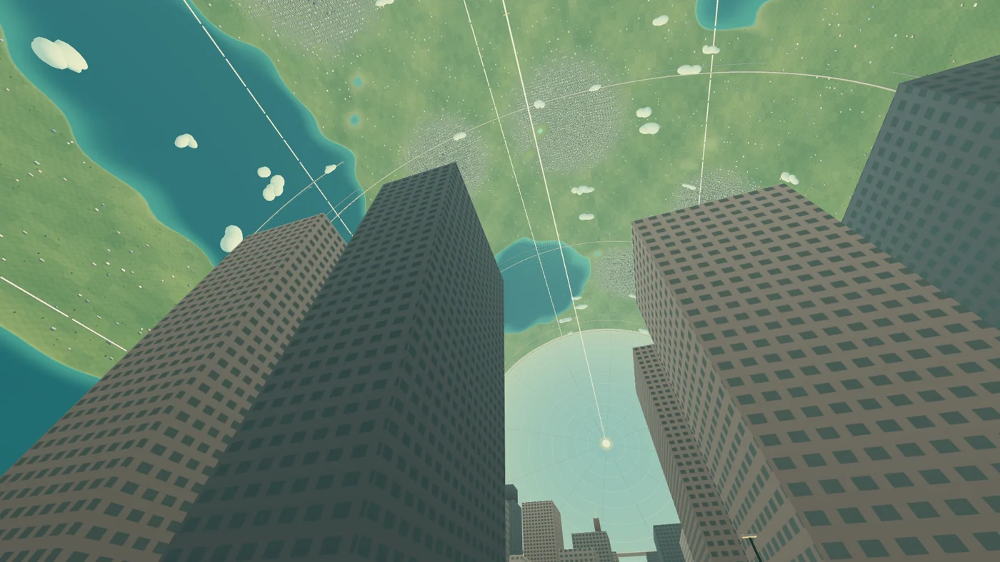

Winning by Overfitting
How we won the EAI Challenge, and what the result does—and doesn’t—say about embodied AI.
Read the research paperI’m an AI researcher at eBay. I write about AI and robotics, build small experiments, and keep notes on what I learn.
Before this: computer science at UC San Diego, chip design at Texas Instruments, and electrical engineering at NIT Karnataka.


Learning systems, embodied agents, and what happens when models can act.
GPT-7 Will Have Arms · EAI Challenge · ZINify02 / 3 piecesPlaces to explore, from a bee’s little world to a civilization around a star.
Another Sky · A Clauiet Life · Dyson Swarm03 / 2 piecesProjects, decisions, and what I learned by trying to make something work.
The StartR post-mortem · ZINifyHow we won the EAI Challenge, and what the result does—and doesn’t—say about embodied AI.
Read the research paper
A walk inside an O’Neill cylinder. Part of my space collection, Dyson Swarm.
The StartR post-mortem: building a writing assistant, losing focus, and learning about distribution.
Where it fits in my history